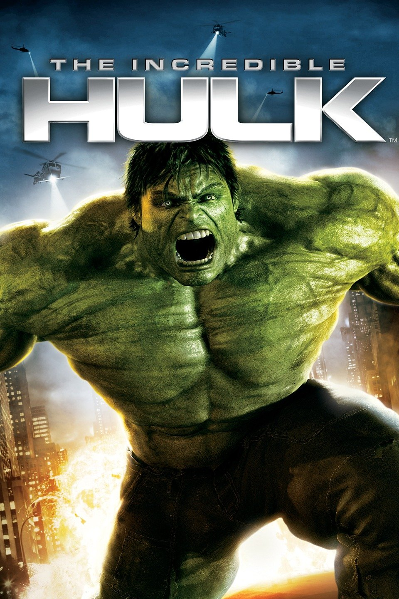

|  |
Movie Name: |
The Incredible Hulk |
|
At Culver University in Virginia, General Thunderbolt Ross meets with Dr. Bruce Banner, the colleague and boyfriend of his daughter Betty, regarding an experiment that Ross claims is meant to make humans immune to gamma radiation. The experiment — part of a World War II era "super soldier" program that Ross hopes to recreate — fails, and the exposure to gamma radiation causes Banner to transform into the Hulk for brief periods of time, whenever his heart rate rises above 200. The Hulk destroys the lab and injures or kills the people inside. Banner becomes a fugitive from the U.S. military and Ross in particular, who wants to weaponize the Hulk process. Five years later,[N 1] Banner works at a bottling factory in Rocinha, Rio de Janeiro in Brazil, while searching for a cure for his condition. On the Internet, he collaborates with a colleague he knows only as "Mr. Blue", and to whom he is "Mr. Green". He is also learning meditative breathing techniques to help keep control, and has not transformed in five months. After Banner cuts his finger, a drop of his blood falls into a bottle, and is eventually ingested by an elderly consumer in Milwaukee, Wisconsin, giving him gamma sickness. Using the bottle to track down Banner, Ross sends a SWAT team, led by Russian-born British Royal Marine Emil Blonsky, to capture him. Banner transforms into the Hulk and defeats Blonsky's team. After Ross explains how Banner became the Hulk, Blonsky agrees to be injected with a small amount of a similar serum, which gives him enhanced speed, strength, agility, and healing, but also begins to deform his skeleton and impair his judgment. Banner returns to Culver University and reunites with Betty, who is dating psychiatrist Leonard Samson. Banner is attacked a second time by Ross and Blonsky's forces, tipped off by the suspicious Samson, causing him to again transform into the Hulk. The ensuing battle outside the university proves to be futile for Ross' forces and they eventually retreat, though Blonsky, whose sanity is starting to falter, boldly attacks and mocks the Hulk. The Hulk seemingly kills Blonsky and flees with Betty. After the Hulk reverts to Banner, he and Betty go on the run, and Banner contacts Mr. Blue, who urges them to meet him in New York City. Mr. Blue is actually cellular biologist Dr. Samuel Sterns, who tells Banner he has developed a possible antidote to Banner's condition. After a successful test, he warns Banner that the antidote may only reverse each individual transformation. Sterns reveals he has synthesized Banner's blood samples, which Banner sent from Brazil, into a large supply, with the intention of applying its "limitless potential" to medicine. Fearful of the Hulk's power falling into the military's hands, Banner wishes to destroy the blood supply. Meanwhile, Blonsky is revealed to have survived the earlier battle at Culver University and has completely healed. He joins Ross' forces for a third attempt to take Banner into custody. They succeed and Banner, along with Betty, are taken away in a helicopter. Blonsky stays behind and orders Sterns to inject him with Banner's blood, as he covets the Hulk's power. Sterns warns that the combination of the super-soldier formula and Banner's blood may cause him to become an "abomination", but Blonsky insists. The experiment mutates Blonsky into a creature with size and strength surpassing that of the Hulk, but drives him mad. He attacks Sterns, who gets some of Banner's blood in a cut on his forehead, causing him to begin mutating as well. Blonsky then rampages through Harlem. Realizing that the Hulk is the only one who can stop Blonsky, Banner convinces Ross to release him. He jumps from Ross' helicopter and transforms after hitting the ground. After a long and brutal battle through Harlem, the Hulk defeats Blonsky. After having a small, peaceful moment with Betty, the Hulk flees from New York. A month later, Banner is in Bella Coola, British Columbia. Instead of trying to suppress his transformation, he successfully transforms in a controlled manner. In a final scene, Tony Stark approaches Ross at a local bar and informs him a team is being put together. |
||